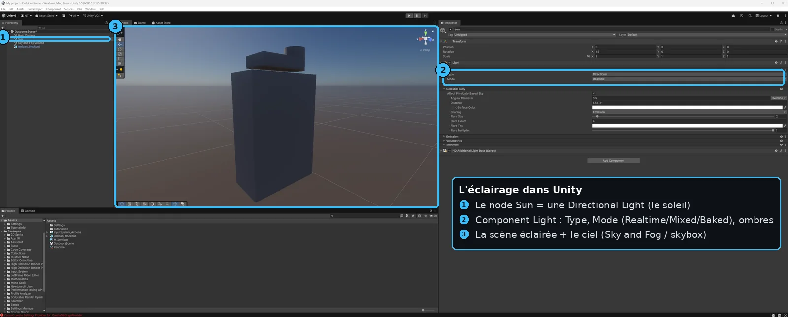

U7 — Éclairage
À la fin de cette leçon, tu sauras :
- Choisir le type de lumière adapté (Directional, Point, Spot, Area) et régler intensité, couleur/température et ombres en connaissance de cause.
- Expliquer la différence entre Realtime, Baked et Mixed (le Light Mode) et pourquoi le baked est gratuit à l'exécution mais figé.
- Décrire ce qu'est la Global Illumination (lumière indirecte, rebonds, couleurs qui bavent) et pourquoi elle change tout le rendu.
- Préparer une scène pour le lightmapping : marquer les objets Static, fournir un UV2 non chevauchant, régler la résolution de lightmap.
- Utiliser les Light Probes pour éclairer les objets dynamiques et les Reflection Probes pour des reflets PBR locaux corrects.
- Configurer la skybox comme source d'ambiance et de reflets, et comprendre l'exposition en HDRP.
Pourquoi c'est important
Un asset parfaitement modélisé, déplié et texturé (tout ce que tu as appris dans les fondamentaux) peut paraître plat et faux à l'écran si l'éclairage est mauvais. À l'inverse, un asset modeste mais bien éclairé respire la production. L'éclairage est ce qui transforme une collection de maillages en une scène crédible : il donne le volume, l'ambiance, l'heure de la journée, l'émotion. C'est l'un des leviers artistiques les plus puissants du jeu vidéo.
Mais en temps réel, la lumière est aussi l'un des postes les plus coûteux en performance. Calculer comment chaque rayon rebondit dans une pièce, soixante fois par seconde, sur le matériel d'un joueur, est tout simplement impossible en force brute. Tout le métier consiste donc à tricher intelligemment : pré-calculer ce qui ne bouge pas, calculer en direct seulement ce qui bouge, et raccorder les deux sans que la jointure se voie.
C'est précisément ce que cette leçon démonte. Comprendre pourquoi Unity distingue réel et précuit, pourquoi un objet doit être marqué Static pour recevoir une lightmap, et pourquoi un personnage qui se déplace a besoin de Light Probes, c'est la frontière entre une scène qui rame avec des taches noires et une scène fluide et cohérente. C'est exactement la connaissance qui sépare un débutant qui pose une lumière au hasard d'un éclairagiste de production.
Théorie en profondeur
1. Les types de lumières : quatre formes pour quatre usages
Une lumière dans Unity est un composant () que l'on ajoute à un GameObject. Sa forme détermine comment les rayons quittent la source — et donc son coût et son rendu. Il en existe quatre.
- La Directional Light (lumière directionnelle) simule une source infiniment lointaine, comme le soleil. Ses rayons sont tous parallèles et sa position dans la scène n'a aucune importance : seule compte son orientation. Une scène extérieure n'en a généralement qu'une. C'est la lumière la moins coûteuse car il n'y a pas d'atténuation avec la distance à calculer.
- La Point Light (lumière ponctuelle) émet dans toutes les directions depuis un point, comme une ampoule nue. Son intensité décroît avec la distance (atténuation) jusqu'à un Range (rayon de portée) au-delà duquel elle n'éclaire plus rien. Au-delà du Range, le calcul s'arrête : ce paramètre est donc autant artistique que performant.
- La Spot Light (projecteur) émet dans un cône orienté, comme une lampe torche ou un spot de scène. On règle l'angle d'ouverture () et la portée. Idéale pour diriger le regard ou simuler un lampadaire.
- La Area Light (lumière surfacique) émet depuis une surface (un rectangle ou un disque), ce qui produit des ombres douces et réalistes par nature, comme un panneau lumineux de studio. Son coût est tel qu'elle n'existe en pratique qu'en baked : elle ne fonctionne que si on précalcule son influence (voir plus loin).
Intensité, couleur et température
Chaque lumière a une Intensity (intensité) et une couleur. La couleur peut se régler à la main, mais l'outil professionnel est la température de couleur, exprimée en kelvins (K) : une bougie tourne autour de 1900 K (très chaud, orangé), une ampoule domestique vers 2700 K, la lumière du jour vers 5500–6500 K (neutre), et un ciel d'ombre bleuté monte au-delà de 8000 K. Raisonner en kelvins plutôt qu'en « teinte au hasard » donne des ambiances physiquement cohérentes et facilite l'harmonie entre plusieurs sources.
En HDRP (le pipeline haut de gamme, voir U3), les intensités sont exprimées en unités physiques réelles : lux pour le soleil, lumens ou candelas pour les ampoules. Cela permet de reproduire un éclairage de référence mesuré dans la réalité. En URP et Built-in, l'intensité reste une valeur relative plus libre.
Les ombres : dures, douces, et le compromis du bias
Une lumière peut projeter des ombres (). Hard Shadows donne un bord net ; Soft Shadows adoucit le contour, plus réaliste mais plus coûteux. La netteté dépend de la résolution de la shadow map (la texture intermédiaire où l'ombre est calculée) : trop basse, l'ombre devient crénelée ; trop haute, elle coûte de la mémoire et du temps.
Le réglage piégeux est le bias (biais). Comme l'ombre est calculée dans une texture de résolution finie, des erreurs d'arrondi font qu'une surface peut s'auto-ombrer par erreur : c'est le shadow acne (un moutonnement de points sombres). On corrige en décalant légèrement l'ombre avec le Bias. Mais si on pousse trop, l'ombre se détache de l'objet qui la projette : c'est le peter-panning (l'objet semble flotter, comme Peter Pan séparé de son ombre). Le bon réglage est le plus petit bias qui supprime l'acne sans créer de détachement visible.
🖐Essaie maintenant~1 min
Sélectionne la Directional Light de la scène. Fais varier son Intensity, puis sa Color (bleuté → orangé) : toute l'ambiance bascule du matin froid au coucher de soleil. Une seule lumière donne déjà le ton d'une scène.
2. Light Mode : temps réel, précuit, ou mixte
Voici le cœur conceptuel de la leçon. Chaque lumière a un Mode (, ou ) qui décide quand son influence est calculée. Ce choix gouverne à la fois le réalisme, la flexibilité et le coût.
Realtime : calculé chaque image
Une lumière Realtime (temps réel) est recalculée à chaque frame. Elle peut bouger, changer de couleur, s'éteindre ; ses ombres suivent les objets qui se déplacent. C'est la seule option pour une lumière dynamique (le phare d'une voiture, une explosion, un cycle jour/nuit). Mais elle ne calcule, par défaut, que la lumière directe : les rayons qui partent de la source et frappent une surface, point. Et elle est coûteuse : chaque lumière temps réel avec ombres ajoute des passes de rendu.
Baked : précalculé une fois, gravé dans des lightmaps
Une lumière Baked (précuite) est calculée une seule fois, dans l'éditeur, avant le jeu. Le résultat — y compris les rebonds indirects et les ombres — est gravé dans des textures appelées lightmaps (cartes de lumière), plaquées sur les surfaces. À l'exécution, le moteur ne calcule plus rien : il lit l'image. Le coût en jeu est donc quasi nul, ce qui permet un éclairage très riche même sur mobile.
La contrepartie est radicale : c'est figé. La lumière ne peut plus bouger ni changer, et — point crucial — elle ne peut éclairer que des objets qui ne bougent pas non plus. C'est pourquoi un objet recevant une lightmap doit être marqué Static (statique). Un personnage qui marche ne peut pas « recevoir » une lightmap : l'image gravée correspondrait à une position figée.
Mixed : le meilleur des deux mondes
Le mode Mixed (mixte) tente de combiner les deux. Typiquement, le soleil en Mixed : la part indirecte (les rebonds, l'ambiance diffuse) est baked dans les lightmaps des objets statiques (gratuit), tandis que la part directe peut continuer à projeter des ombres temps réel sur les objets dynamiques. Ainsi, ton décor profite d'une GI riche et gratuite, et ton personnage qui passe devant projette quand même une vraie ombre mouvante. C'est la configuration la plus courante en production console/PC.
3. La Global Illumination : la lumière qui rebondit
Dans la vraie vie, un rayon de soleil ne s'arrête pas à la première surface : il rebondit. Le sol rouge sous un mur blanc le teinte légèrement de rose ; un coin d'ombre n'est jamais totalement noir parce que la lumière y parvient par ricochets. Cet ensemble de rebonds s'appelle la Global Illumination (GI, illumination globale) ou lumière indirecte.
Pourquoi est-ce si important ? Parce que sans GI, une scène n'a que de la lumière directe : les zones non frappées par une lampe sont noires, plates, mortes — un look « rendu OpenGL des années 2000 ». Avec la GI, les couleurs bavent d'une surface à l'autre, les ombres se remplissent de lumière douce, et la scène devient habitée. C'est le facteur numéro un du réalisme d'un environnement.
Pour vérifier que ta GI fonctionne, pose un objet blanc à côté d'une grande surface très saturée (un mur rouge, une moquette verte). Après le bake, le côté de l'objet face au mur doit prendre une légère teinte colorée. Si tout reste blanc neutre, ta GI n'est pas calculée — tu n'as que de la lumière directe.
Calculer ces rebonds en temps réel est extrêmement coûteux. Historiquement, Unity utilisait un système nommé Enlighten pour une GI temps réel précalculée ; il est aujourd'hui déprécié. Le système de référence est désormais le Progressive Lightmapper, qui cuit la GI dans les lightmaps via du path tracing (lancer de rayons progressif). Il existe en deux versions : CPU (compatible partout, lent) et GPU (beaucoup plus rapide, exige une carte graphique adaptée). En 2026, sous Unity 6.3 LTS, le GPU lightmapper est l'outil de bake recommandé ; en HDRP, un lightmapper basé sur le path tracing pousse encore la qualité.
4. Le lightmapping : cuire la lumière dans des textures
Le lightmapping est le processus qui produit les lightmaps. Tout se pilote depuis . Mais pour qu'un objet reçoive une lightmap propre, deux conditions sont indispensables, et leur oubli est la source d'erreurs la plus fréquente.
Condition 1 : l'objet doit être Static
Seuls les objets marqués Static (case en haut à droite de l', plus finement dans les Static Flags) sont inclus dans le bake. C'est logique : la lumière est gravée pour une position donnée ; si l'objet bougeait, l'image serait fausse. Un mur, un sol, un rocher décoratif : Static. Une porte qui s'ouvre, un ennemi, le joueur : jamais Static.
Condition 2 : un second jeu d'UV (UV2) non chevauchant
Une lightmap est une texture plaquée sur l'objet ; elle a donc besoin de coordonnées UV pour savoir quelle partie de la texture va sur quelle face. Or les UV de texturing classiques (UV1) se chevauchent souvent volontairement : on superpose deux côtés identiques d'un objet pour réutiliser la même portion de texture et gagner de la place (vu en F6). C'est parfait pour la couleur, mais catastrophique pour la lumière : si deux faces partagent le même pixel de lightmap, l'ombre de l'une se retrouve plaquée sur l'autre.
La lightmap exige donc un UV2 (ou Lightmap UVs) : un dépliage sans aucun chevauchement, où chaque triangle occupe son propre espace. Tu as deux options : laisser Unity le générer automatiquement à l'import (case dans les ), ce qui suffit pour la plupart des props ; ou le créer à la main dans Blender pour un contrôle total sur les assets importants (sols, grands murs).
Lightmap Resolution : le curseur le plus dangereux
La Lightmap Resolution (résolution de lightmap, en texels par unité) fixe la finesse de la lumière cuite. Plus elle est haute, plus les ombres sont précises — mais le temps de bake et la mémoire explosent de façon quadratique. Doubler la résolution, c'est quadrupler le nombre de texels. Une valeur trop ambitieuse sur une grande scène peut faire passer un bake de quelques minutes à plusieurs heures. La bonne pratique : une résolution modeste partout, et seulement localement plus haute (via le Scale In Lightmap de l'objet) là où des ombres nettes comptent vraiment.
5. Light Probes : éclairer ce qui bouge
Problème : les objets dynamiques (le joueur, les ennemis, une caisse qu'on déplace) ne sont pas Static, donc ne reçoivent aucune lightmap. Sans rien faire, ils ignorent toute la belle GI de la scène et apparaissent plats et trop sombres, comme posés sur la scène plutôt qu'intégrés. C'est un défaut très visible : un personnage qui traverse une cave éclairée par une torche orange devrait s'orangé, pas rester gris.
La solution s'appelle les Light Probes (sondes de lumière). Ce sont des points qu'on sème dans le volume de la scène (via un ) ; chacun échantillonne et stocke la GI à son emplacement pendant le bake. À l'exécution, un objet dynamique trouve les probes qui l'entourent, interpole entre elles, et reçoit ainsi une teinte d'éclairage cohérente avec l'endroit où il se trouve. C'est léger et donne l'illusion que l'objet baigne dans la même lumière indirecte que le décor.
Densifie les probes là où l'éclairage change vite (passages d'une zone claire à sombre, entrées de pièces, bordures d'ombres) et espace-les dans les grandes zones uniformes. Place-en toujours là où des objets dynamiques circulent réellement : inutile d'en mettre dans un mur plein.
6. Reflection Probes : des reflets justes en PBR
Le PBR (vu en F7) fait que les surfaces métalliques ou lisses reflètent leur environnement. Mais que reflètent-elles, concrètement ? Par défaut, seulement la skybox — ce qui donne des reflets faux en intérieur : une boule chromée dans une cave refléterait le ciel au lieu des murs de la cave.
La Reflection Probe (sonde de réflexion) résout cela : placée dans la scène, elle capture une vue panoramique à 360° (une cubemap) de l'environnement autour d'elle. Les matériaux réfléchissants situés dans sa zone d'influence lisent cette capture au lieu de la skybox : le métal reflète enfin les vrais murs qui l'entourent. Comme la GI, une probe peut être baked (capturée une fois, gratuite) ou realtime (mise à jour en direct, coûteuse, réservée aux miroirs animés). On en pose typiquement une par pièce ou par zone visuellement distincte.
🖐Essaie maintenant~30 s
Toujours sur la Directional Light, fais tourner sa rotation X (l'inclinaison du soleil) : les ombres s'allongent, l'heure de la journée change sous tes yeux. C'est le réglage le plus rentable pour poser une ambiance.
7. Skybox et environnement : l'ambiance globale
La skybox est l'image de fond qui entoure toute la scène (ciel, horizon). Mais elle est bien plus qu'un décor : réglée dans , elle sert de source de lumière ambiante (l'Ambient, la lumière diffuse générale du ciel) et de source de reflets par défaut pour les surfaces PBR. Une skybox peut être procédurale (un ciel calculé selon l'angle du soleil) ou une HDRI (une photo panoramique haute dynamique d'un lieu réel, qui apporte d'un coup une lumière et des reflets crédibles).
Enfin, un mot sur l'exposition. Comme une vraie caméra, le rendu HDRP travaille en plage dynamique étendue et doit décider de la quantité de lumière « qui entre dans le capteur ». L'Exposure (via le composant de post-traitement, voir U8) règle ce niveau : trop haute, l'image est cramée (blanche) ; trop basse, elle est bouchée (noire). En HDRP, une exposition mal réglée donne l'impression que « les lumières ne marchent pas » alors que c'est le capteur qui sature — un piège classique du débutant en pipeline physique.
🔧 Démonstration pas à pas
On éclaire une petite scène d'intérieur dans Unity 6.3 LTS en URP, avec exactement les quatre briques de cette leçon : un soleil en Mixed, un objet statique en lightmap, un personnage dynamique en light probe, et une surface réfléchissante en reflection probe.
- Crée la scène : un sol et quelques murs (le décor), un coffre métallique brillant posé au sol, et un personnage (une capsule fera l'affaire) au milieu. Sélectionne le décor et le coffre, puis coche en haut à droite de l'. Ce que ça fait : tu déclares ces objets comme candidats au bake de GI. Laisse la capsule non-Static (c'est ton objet dynamique).
- Ajoute la lumière du soleil : . Dans son , passe le sur et règle la vers 5500 K. Ce que ça fait : l'indirect partira en lightmap, mais le soleil pourra encore projeter une ombre réelle sur la capsule.
- Vérifie l'UV2 du décor et du coffre. Sélectionne le mesh dans le , ouvre et coche puis . Ce que ça fait : Unity calcule un dépliage non chevauchant dédié à la lumière (renvoi F6). Sans cela, attends-toi à des taches d'ombre.
- Ouvre . Crée un Lighting Settings asset, choisis le comme lightmapper, fixe une raisonnable (par ex. 20–40 texels/unité pour commencer). Ce que ça fait : tu configures le moteur de cuisson et la finesse de la lumière.
- Dans l'onglet de cette même fenêtre, assigne une (procédurale ou HDRI). Ce que ça fait : tu fixes la lumière ambiante et les reflets par défaut de toute la scène.
- Sème des Light Probes : , puis dispose les sondes en grille dans le volume où la capsule circulera, plus dense près des transitions d'ombre. Ce que ça fait : elles captureront la GI pour nourrir ton objet dynamique.
- Pose une Reflection Probe : , centre-la dans la pièce et ajuste sa boîte d'influence pour englober le coffre. Ce que ça fait : le coffre métallique reflétera les murs réels au lieu du ciel.
- Lance le bake : bouton (en bas de la fenêtre Lighting). Ce que ça fait : le Progressive Lightmapper lance le path tracing, remplit les lightmaps des objets statiques, échantillonne les Light Probes et capture les Reflection Probes. Patiente jusqu'à 100 %.
- Entre en et déplace la capsule. Observe : le décor a des ombres douces gratuites, le coffre reflète les murs, et la capsule change de teinte en passant d'une zone claire à une zone d'ombre — preuve que les probes fonctionnent.
Ce que tu as vraiment fait : tu as réparti le coût intelligemment. Le décor coûte presque rien (lightmaps), le personnage reste dynamique sans rester sombre (probes), et les reflets sont locaux et crédibles (reflection probe) — exactement l'architecture d'éclairage d'une vraie scène de production.

⚠️ Pièges & erreurs courantes
🔧Exercice pratique
Dans Unity 6.3 LTS (URP), recrée une mini-scène d'intérieur :
- Construis une pièce simple (sol + 4 murs), un objet métallique brillant et une capsule « personnage » au centre.
- Marque le décor et l'objet brillant en Static ; laisse la capsule dynamique. Vérifie que Generate Lightmap UVs est coché sur les meshes statiques.
- Ajoute une Directional Light en mode Mixed, température réglée en kelvins, et assigne une skybox dans l'onglet Environment.
- Pose un Light Probe Group couvrant le sol et une Reflection Probe centrée dans la pièce. Lance Generate Lighting.
- Une fois cuit, déplace la capsule en Play d'une zone claire vers un coin d'ombre, et observe le changement de teinte.
- Le décor montre des ombres douces et de la GI (une teinte de couleur bave d'un mur vers les objets voisins) sans aucune tache d'ombre.
- La capsule change visiblement d'éclairage en se déplaçant : les Light Probes fonctionnent.
- L'objet métallique reflète les murs de la pièce, pas le ciel : la Reflection Probe fonctionne.
- Tu peux expliquer pourquoi chaque objet est (ou non) Static et quel système l'éclaire.
Vérifie ta compréhension
Clique sur la réponse que tu penses correcte : la bonne réponse et une explication s'affichent aussitôt.
Exercices
Éclaire une petite scène avec une Directional Light (soleil) et observe l'effet de l'angle sur les ombres.
Voir une piste
La Directional Light simule le soleil (direction, pas de position). Tourne-la : les ombres s'allongent (matin/soir) ou se raccourcissent (midi). Règle l'intensité et la couleur pour l'ambiance.
Marque les objets statiques, configure le Lightmapping et lance un bake. Compare avant/après.
Voir une piste
Coche « Contribute GI » sur les objets fixes, ouvre Lighting ▸ règle la résolution de lightmap ▸ Generate Lighting. Tu obtiens des ombres douces et de la GI cuites, peu coûteuses à l'affichage.
Ajoute un objet mobile et utilise des Light Probes pour qu'il s'intègre à l'éclairage baked.
Voir une piste
Place un Light Probe Group couvrant la zone de déplacement. Sans probes, l'objet dynamique paraît « détaché » (mal éclairé). Avec, il capte la GI ambiante locale et s'intègre naturellement.
Éclaire la scène de ton prop : pose une Directional Light (soleil), règle ombres et intensité, et ajoute un peu d'ambiance (skybox, ambient) pour le mettre en valeur.
- Quatre formes de lumière : Directional (soleil), Point, Spot, Area (baked seulement). Raisonne la couleur en kelvins.
- Light Mode : Realtime (dynamique, coûteux), Baked (gratuit en jeu mais figé, objets Static), Mixed (indirect baked + ombres réelles).
- La Global Illumination (rebonds, couleurs qui bavent) fait le réalisme ; on la cuit avec le Progressive Lightmapper (GPU recommandé).
- Une lightmap exige un UV2 non chevauchant ; attention à la Lightmap Resolution (coût quadratique).
- Les objets dynamiques s'éclairent via les Light Probes ; les reflets locaux corrects viennent des Reflection Probes ; la skybox donne l'ambiance et les reflets par défaut.
Glossaire des termes introduits
Directional / Point / Spot / Area Light — les quatre formes d'émission : parallèle (soleil), omnidirectionnelle, en cône, et surfacique (baked).
Température de couleur — teinte d'une lumière exprimée en kelvins (chaud orangé bas, neutre vers 5500 K, froid bleuté haut).
Light Mode (Realtime / Baked / Mixed) — décide quand l'influence d'une lumière est calculée : chaque frame, une fois pour toutes, ou un mélange des deux.
Lightmap — texture où la lumière (directe + indirecte) est gravée pour les objets statiques ; gratuite à l'exécution mais figée.
Global Illumination (GI) — lumière indirecte issue des rebonds ; remplit les ombres et fait baver les couleurs.
Progressive Lightmapper — moteur de cuisson de la GI par path tracing (versions CPU et GPU) ; remplace l'ancien Enlighten.
Static — marquage d'un objet qui ne bouge pas ; condition pour recevoir une lightmap.
UV2 (Lightmap UVs) — second jeu d'UV sans chevauchement dédié à la lumière, distinct des UV de texturing.
Light Probe — point qui échantillonne la GI pour éclairer les objets dynamiques par interpolation.
Reflection Probe — capture cubemap de l'environnement local pour des reflets PBR corrects.
Skybox — image d'environnement servant de fond, de lumière ambiante et de reflets par défaut.
Tous ces termes (et bien d'autres) sont rassemblés dans le glossaire global.
Pour aller plus loin
- U3 — Render Pipelines : ce que Built-in, URP et HDRP changent pour l'éclairage et les unités physiques.
- U6 — Matériaux : comment le métallique et la rugosité réagissent aux reflets des probes.
- U8 — Post-processing : exposition, tonemapping et bloom qui finalisent le rendu lumineux.
- F6 — UV mapping : pourquoi l'UV2 doit être non chevauchant pour le lightmapping.
- F7 — Le workflow PBR : pourquoi les surfaces réfléchissent leur environnement.
- U11 — Optimisation : budgéter les lumières temps réel et les lightmaps pour tenir le framerate.